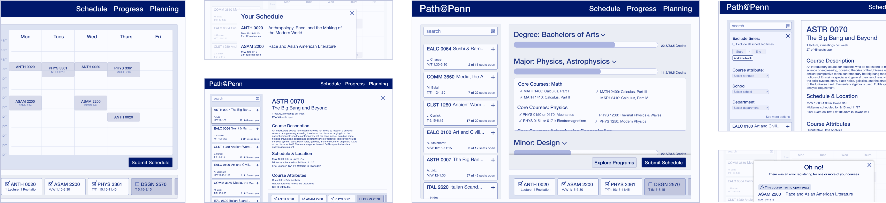
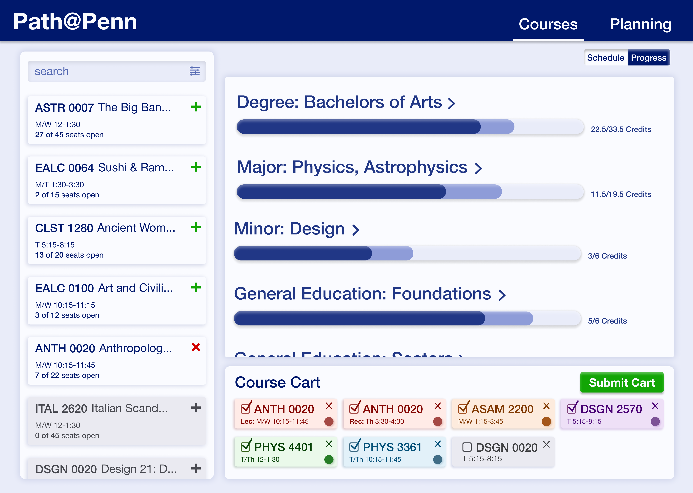
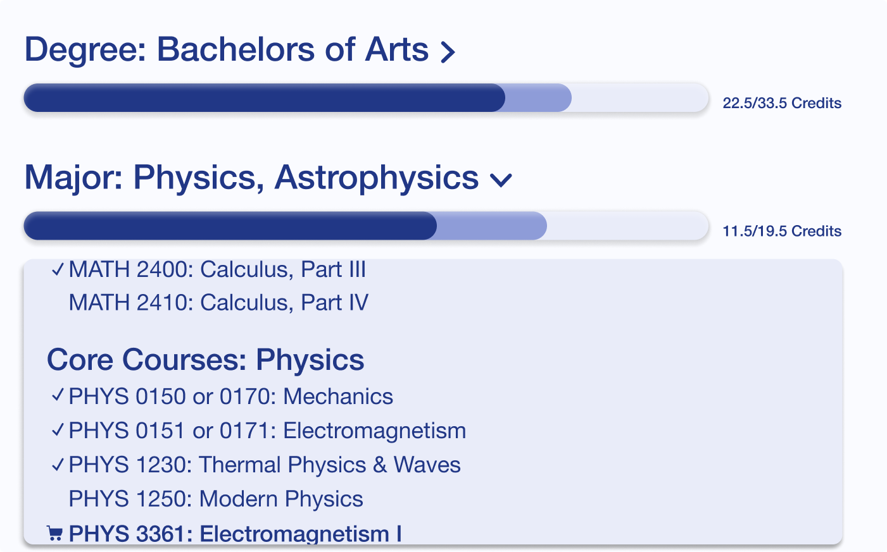
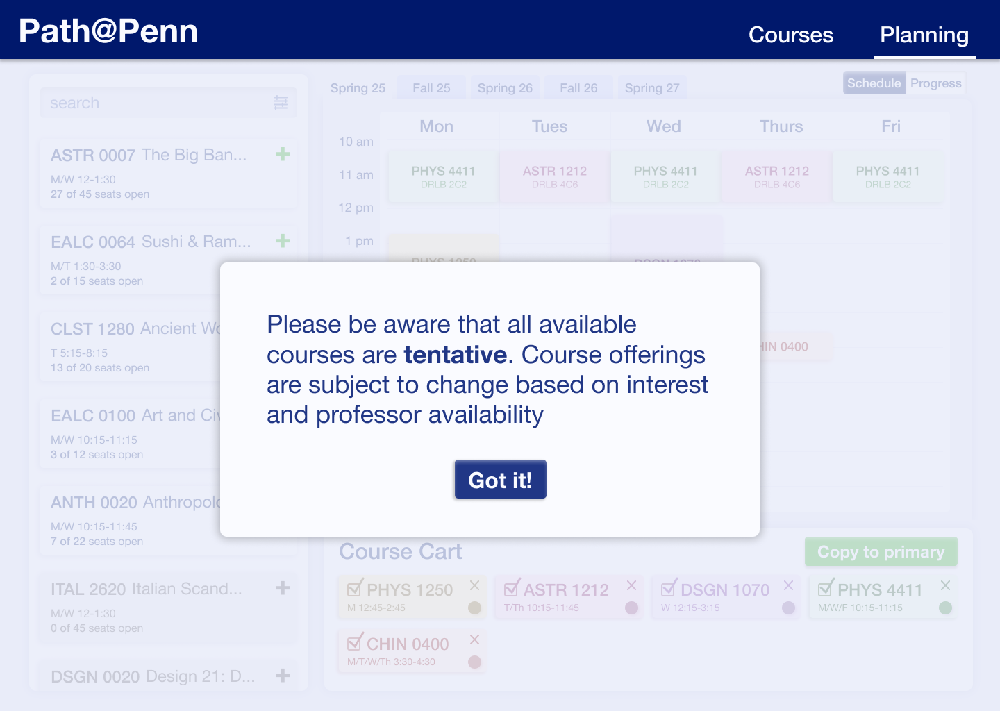
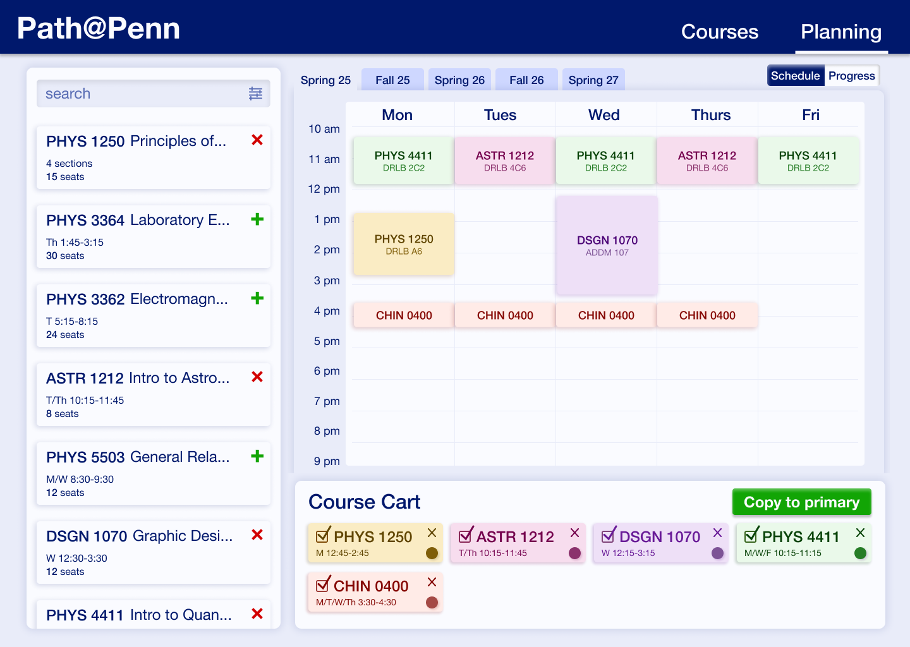
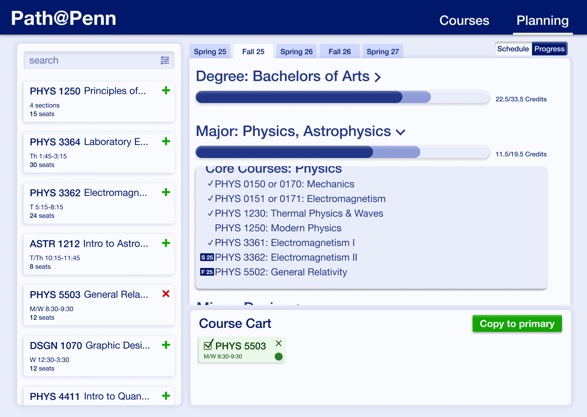
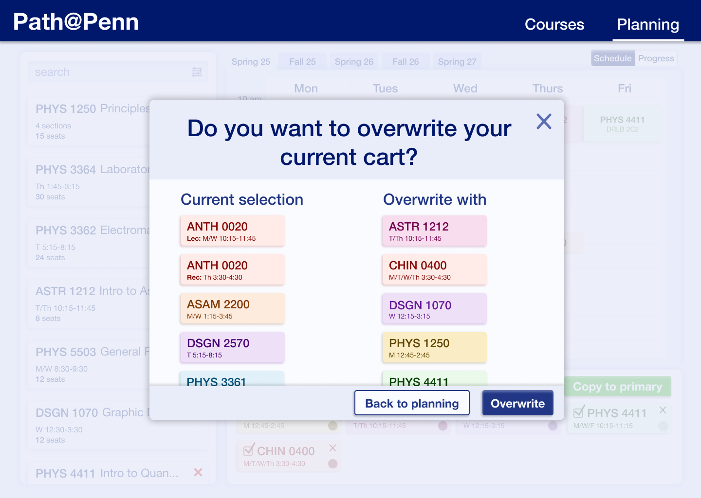

Problem
All UPenn students must register for classes each semester
using Path@Penn, the university's course registration system.
Students find Path@Penn confusing to use. I was tasked to redesign the system
to improve overall satisfaction.
Goals
• Identify points of frustration within the current registration system
• Find useful existing features that students use regularly
• Note external registration tools and how they can be integrated
Result
I improved the registration system to:
I. Enable students to confidently complete
registration tasks
II. Provide students with key course and schedule information
III. Help students plan future semesters
I. Initial Research
User Interviews
I conducted a series of one-on-one interviews with UPenn undergraduate students
to understand their experience with Path@Penn - positive and negative.
I organized student statements and grouped them into major themes.
Research Synthesis
After synthesizing my findings, I came away with four top insights.
Academic Planning Need
Users often plan coursework multiple semesters out and use external sites due to lack of tools on Path@Penn.
Key Features are Hard to Find
It is difficult to find important information or useful features and users struggle to find degree requirements to aid them in selecting courses.
Schedule Viewing is Critical
Users primarily want to view their course schedule and find it frustrating that this information is not easily accessible.
Task Success Unclear
Users are confused whether schedule changes went through because of an absence of confirmation messages.
How Might We Statements
After establishing the key interview insights, I formulated top problems to solve.
How might we increase user confidence when navigating course selection and submitting schedules?
How might we enable users to easily find and access key information?
How might we allow users to feel more prepared for future semesters?
II. Initial Designs
Low-Fidelity Mock-ups
After many initial sketches of Path@Penn, I decided on an updated layout that features the
course search, course calendar, and cart selection. Contrary to the original Path@Penn design,
this layout allows users to simultaneously access all primary information.
Mid-Fidelity & User Feedback
I began developing mid-fidelity mock-ups for further user testing. The users whom I spoke with
expressed a desire for a more visible cart
and an easy option to remove courses from their carts.

III. High-Fidelity Prototypes
Informed by user feedback and UPenn branding
guidelines, my Path@Penn redesign features a
simplified course registration process and increased user agency.
Landing Page
I decided on an updated layout that features the course search, course calendar,
and cart selection. Contrary to the original Path@Penn design, this layout
allows users to simultaneously access all primary information and view
their schedule at first glance after logging in.
Navigation
Primary and alternative carts condensed into a single cart with course selection toggles
Convenient navigation between schedule view, progress view, and planning menu
Simplified course search with auto-populated classes and a collapsed advanced filter menu
Advanced Search Filters
Before
Excessive filters with unclear titles, drop down menus
contain hundreds of selections that are not applicable
to the user.
After
Collapsible filter menu featuring primary filters
only, drop down menus only contain the most
relevant selections with an option to expand
for a complete list
Submission Confirmation
Users are now asked to review and confirm their course selection
before submission. After submission, users are notified about whether
or not their registration was successful as well as the cause for
any errors in scheduling.
Degree Progress
Users can easily monitor their progress
within their specific course of study. Degree
requirements are broken into major(s),
minor(s), and general education requirements
based on school of enrollment.


Progress bar separated by completed and selected
courses so that users can see how
course selection impacts their progress.
Expanded fields allow users to easily view
and select courses within a requirement.
Academic Planning
Users can now plan mock schedules for future semesters.
Course Availability
While core degree courses are constant from year to year,
elective courses often change. In order to prevent future
stress, users must acknowledge that availablity may vary
from those that they plan for.
Elective
courses fulfill general education requirements
and can easily be substituted if they are unavailable.
While inconvenient, the potential lack of course
availability does not significantly decrease the
utility of this feature

Schedule & Progress
The schedule & progress views are the same as in standard
course registration. Progress view indicates which
semester a course or requirement is scheduled
for within the dropdown menu.
Users can
toggle between semesters with the tabs along the
top of the window.


Cart Transfers
All carts from the planning page
can quickly be transferred to course selection.
If the user already has courses in their cart,
they will be prompted before overwriting
their current selection.

Final Reflections
I presented my designs and findings to the
registrars office which was well received.
In highsight and upon further reflection, if
I had more time or could do it again I would
consider:
• Making it even simpler:
implementing a more static and simplified home screen to
easily access key information after registration,
such as adding office hours, instructor contact,
and an exam schedule.
• Improving design elements:
working through some different color choices, hierarchy, and white space
Overall, I am proud of what I achieved as this was a short term, solo UX design.
I learned a lot throughout this process both in the
importance of incorporating user feedback along the
way, and the impact of different choices I made in the
final experience and design.